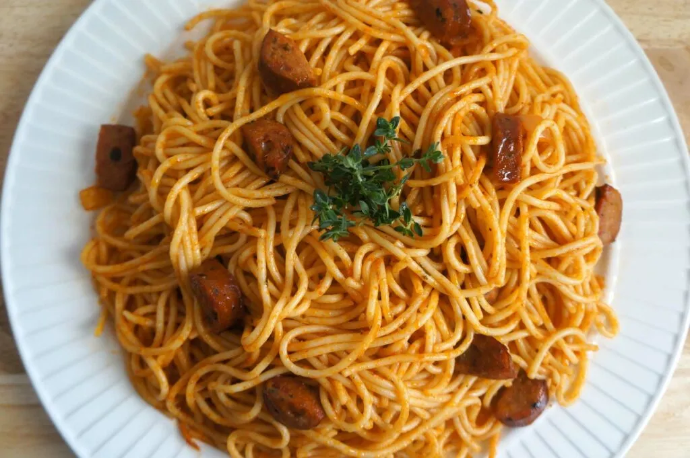

Spaghetti w/ hotdogs

Description
This plate can be served for breakfast, lunch, and dinner making it an easy and versatile dish. The recipe can be altered be adding different meats or removing meats entirely.
Ingredients
- 1 lb spaghetti
- 3 tablespoons olive oil
- 1 tablespoon tomato paste
- 1 tablespoon garlic
- 1 cup white onions
- 1 teaspoon thyme (fresh, chopped)
- 5 chicken sausages or hotdogs
- 1 1/2 tablespoons chicken bouillon powder (preferably low sodium)
- salt
- 1 1/2 cups reserve pasta water
- pepper
- 1/2 teaspoon red pepper (crushed or habanero pepper - optional)
Steps
- Boil pasta according to the packaging. In a heavy large saucepan, heat oil and add tomato sauce or ketchup. (if using ketchup add one additional tablespoon) Cook tomato paste for 3 – 4 minutes while stirring occasionally. Add garlic, onion, thyme, and cook for 4 minutes while stirring to blend. Add chicken bouillon and stir.
- In a separate pan, cook or pan-fried sausages in a very little oil. Add to the tomato mixture.
- Add pasta to the pot with the tomato and sausages mixture and stir to blend while gradually adding the pasta water. Lower heat and cover and cook for another 4-5 minutes. Add crushed red pepper if using. Season with salt and pepper to taste. Serve hot with a salad.
- Note* use vegetables if you don't like meat
back to main page